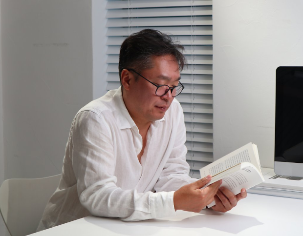
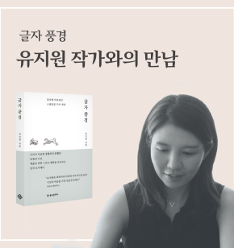
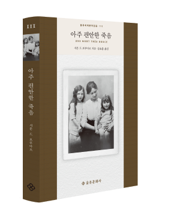
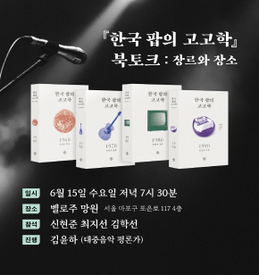
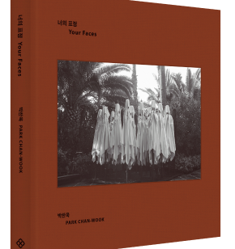
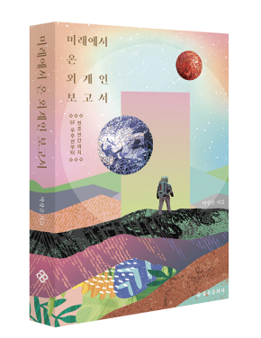
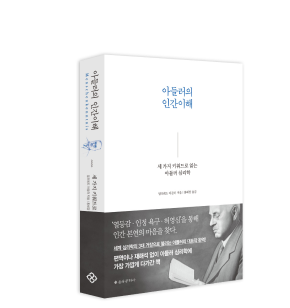

1945년(을유년)12월 1일
광복의 감격과 의의를 기리며, '출판은 곧 건국 사업'이라는
사명감으로 첫발을 내디딘 을유문화사는
한국현대사와 궤軌를 같이하며 한국 출판의 기틀을 다져 왔습니다.
한국 현대사와 궤軌를 같이하며
한국 출판의 기틀을 다져 왔습니다.
책
을유문화사에서
발간한 도서목록입니다.
 헤어질 결심 각본
헤어질 결심 각본
 한국 팝의 고고학 1960
한국 팝의 고고학 1960
 공간의 미래
공간의 미래
 스트라빈스키
스트라빈스키
 두 개의 나
두 개의 나
 마법의 비행
마법의 비행
을유인터뷰

“’공동의가치’,’ 함께사는가치’에 대해
눈을뜨면 좋겠다는 바람이 있어요”
아무래도 건축가로서 경력과 관계가 있는 것 같아요. 나이를 먹고 성숙해지면서 보이는 것보다 보이
지 않는 것이 더 중요하다는 사실을 깨닫기 시작했거든요. ‘건축과 도시의 내면적인 의미’를 책을 통
해 정리하고 싶었어요.
소식
-  글자 풍경 유지원 작가와의 만남 일정 글자 풍경 유지원 작가와의 만남 일정 공유합니다. 미리 참고하시고, 많은 참여 부탁드립니다.
-  한국출판문화산업진흥원 4월 추천도서 아주 편안한 죽음이 선정되었습니다. 한국출판문화산업진흥원 4월 추천도서로 시몬 드 보부아르 『아주 편안한 죽음』이 선정되었습니다. 조경란 소설가의 추천사 전문은 아래 링크를 통해 만나 보실 수 있습니다.
-  한국 팝의 고고학 북토크 : 장르와 장소 출간 후 여러 매체를 통해 각광받고 있는 한국 팝의 고고학 북토크가 벨로주 망원에서 열립니다! 라이브 음악 공간 벨로주 망원은 저자들과 각별한 관계를 맺어온 장소라 더욱 뜻깊은데요. 이번 북토크의 주제는 장르와 장소로, 책에 담긴 이야기는 물론 책에 나오지 않는 이야기까지 전해주실 예정입니다.
-  독서인 독서칼럼에 너의 표정이 소개되었습니다. 글문화연구소 소장이자 글자 풍경의 저자 유지원 작가가 독서인에 박찬욱 감독 사진집 『너의 표정』에 대한 칼럼을 써 주셨습니다. "사진을 감싸는 책의 몸"이라는 제목으로 사진집의 디자인과 종이, 그리고 작품에 대한 이야기를 전해주셨는데요. 칼럼 전문은 아래 링크를 통해 만나 보실 수 있습니다
-  『미래에서 온 외계인 보고서』 올해의 청소년 교양도서 선정 SF를 통해 미래 과학에 얽힌 흥미로운 이야기들을 알기 쉽게 풀어낸 『미래에서 온 외계인 보고서』가 을유문화사에서 출간되었다.
-  아들러의 인간이해 출간기념 이벤트! '슬럼프에 빠진 작가가 살인을 하고 작품을 훔친다'라는 주제로 보조작가가 메인작가를 감금하며 시나리오 집필을 하게 하는 스릴 넘치는 심리드라마 '도둑맞은 책'과 아들러의 인간이해가 만나 이벤트를 진행합니다!